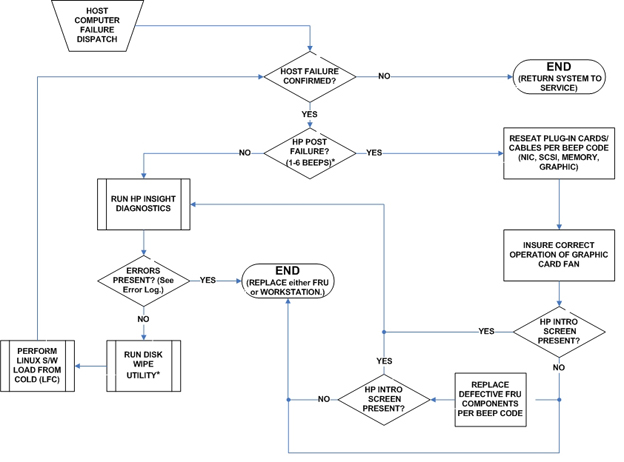
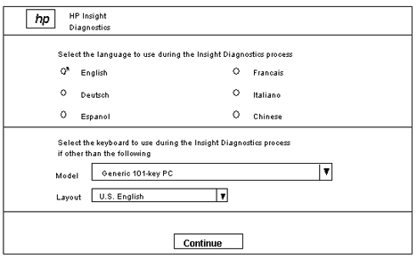
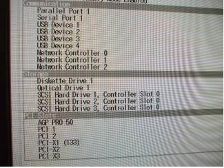
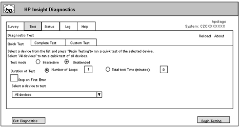
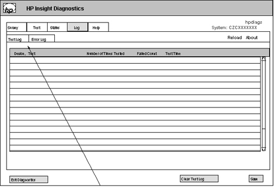
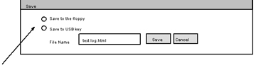
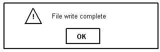
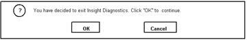

GE Exclusive Use Only
Direction 5500113, Rev# 3
Discovery MR750 3.0T Service Methods
Module Version 3.0, Version Date 6/3/09
GE Exclusive Use Only |
| Required Persons | Preliminary Reqs | Procedure | Finalization |
|---|---|---|---|
| 1 | Not Applicable | 30 mins | Not Applicable |
The HP Diagnostics Tool is executed from a standalone diagnostics CD disk. It does not affect application software, image generation/reconstruction sequences or HDD contents. It tests PC components such as the main board, memory, graphics card, hard drives, internal DVD drive, mouse, keyboard, and others. It is applicable to all HP XW Series PCs.
| Item | Qty | Effectivity | Part# | Manufacturer | |
|---|---|---|---|---|---|
| HP Insight Diagnostics CD (for all XW Series workstations) | 1 | - | 5327923 | - | |
| Updated SaveInfo CD | 1 | - | - | - | |
| DOS formatted disk (optional) | 1 | - | - | - | |
| USB flash drive (optional; required to save status or error log) | 1 | - | - | - | |
| ||||
| ELECTROCUTION HAZARD! | ||||
| DANGEROUS VOLTAGES EXIST INSIDE THE GOC WHEN POWER IS APPLIED. | ||||
| BEFORE SERVICING ANY COMPONENTS INSIDE THE GOC, LOCKOUT/TAGOUT THE WORKSPACE. |
| Condition | Reference | Effectivity |
|---|---|---|
Workstation must be capable of being powered on and booted up. | - | - |
MR 12.x HD systems and earlier may require the keyboard and mouse disconnected from the SCIM, and attached directly to the keyboard and mouse ports on the back of the PC.
Illustration 1: HP Workstation Boot Failures – Assessment

Insert the HP Insight Diagnostics CD into the upper-most internal DVD/CD drive inside the PC.
After placing the Diagnostics CD into the internal DVD/CD drive, restart or reboot the workstation. A few seconds after the HP initialization screen, the following is displayed as the HP Diagnostics program is booting:
ISOLINUX X.XX . . . . . . . . Loading HP Insight Diagnostics Offline CD. Please wait. Boot: . . . . Loading: . . . . . . . . . . . . . Ready. Loading drivers . . .done
| NOTE: | If the HP Insight Diagnostics screen displays, but the HP Diagnostics Tool did not boot, click on [F9=Boot Menu], then select the drive that contains the HP Diagnostics CD. The CD can load from any internal DVD/CD drive. |
| NOTE: | Please disregard any instances of "Loading driver modprobe WARNING" messages displayed during install. Please wait 5 minutes for installation to complete. |
After 5 minutes, the HP Diagnostics Selection screen (see Illustration 2.) displays. Make sure to select the proper language and that "Generic 101-key PC" is selected for the keyboard Model.
Illustration 2: Selection Screen

Click [Continue].
When the End User License Agreement window displays, click on [Agree].
A Loading HP Insight Diagnostics message displays next.
It takes about 20 seconds to load the program while the software is scanning the System hardware. During this time, a bar graph shows the percentage of time remaining.
Next, the HP Diagnostics Start-Up screen (see Illustration 3.) displays. Scroll down to the section labeled "Storage." If the required number of SCSI hard drives (outlined below) does not display, open the host computer chassis and verify the connections.
Illustration 3: HP Diagnostics Startup Screen

Review the total listed memory in the section labeled "Total Memory" to confirm that memory is reported in 4 DIMM slots for all PC types except xw8200, which will report memory in only 2 DIMM slots.
Note the presence of the Help tab at the top of Illustration 4. This tab provides a wealth of information regarding the diagnostic interface selections, reported error codes, and exactly what each test is doing when testing a component.
Illustration 4: Diagnostics Test Window

Click on the Test tab shown in Illustration 4. (In this example, the Quick Test tab and "Unattended" mode are selected.)
Three categories for testing are permitted:
"Quick Test" permits basic testing of a limited selection of PC hardware and is satisfactory for most testing. (This type of test takes about 3 minutes.)
"Complete Test" permits extensive testing of all hardware and is required for certain items, like a graphics card. (This type of test takes about 40 minutes.)
"Custom Test" permits selection of specific diagnostics used to test a device. In addition, the following options are also available:
Test mode default is "Unattended" to automatically execute tests. "Interactive" must be selected if testing a graphics card, keyboard, mouse, or disk drive and requires user responses during testing.
For Select a device to test drop-down, "All devices" is a common selection, but devices can be selected individually or in groups.
Number of Loops (default = 1) is the number of times to run the test.
Total test Time (default = 1 minute) is the duration of time the test is to run.
Stop on First Error is used to indicate if the test should stop at this point.
When finished making the desired selections, click on [Begin Testing] in the lower-right corner.
To check on what is logged once the tests are completed, click on the Log tab shown in Illustration 5.
Illustration 5: Test Log Window

Navigate between the Test Log window (see Illustration 5) for the status of the tests that were run, and the Error Log window (by clicking on the Log tab) for additional details on test(s) that failed.
All reported errors display in the Log tab, and any failures will be identified.
Information on the Help tab (see Illustration 5) can help with explaining error messages.
To save the test results, make sure the USB flash drive is inserted into one of the USB ports, or a blank 3.5-inch DOS formatted disk is inserted into the disk drive, and click [Save] in the Test Log window.
When the Save window (see Illustration 6) displays, click on either the [Save to USB] key (flash drive) or [Save to the floppy] (disk) radio button.
Illustration 6: Save Window

Either keep the default "testlog.html" name or type a name for the test file (i.e., xw8400test.txt) in the File Name field.
Click on [Save] to start saving the test log.
When the File write complete message (see Illustration 7) displays, click [OK] to continue.
Illustration 7: File Write Complete Message - Test Results

Click [Exit Diagnostics] (see Illustration 5) to quit the HP Diagnostics Tool.
When the confirmation message (see Illustration 8) displays, click [OK] to confirm exiting the HP Diagnostics Tool. (The workstation starts to shut down and reboot).
Illustration 8: Confirmation Message - Exit Diagnostics

Wait for the HP Insight Diagnostics CD to be automatically ejected from the DVD/CD drive, and then promptly remove it to avoid the workstation rebooting again from the Diagnostics CD.
Remove the USB flash drive from the USB port.
The Disk Wipe procedure is done to remove remnant boot or partition information from all disk drives to prevent an instance when the OS installer is confused by reused disk drives that contain previous boot and partition information. The typical symptom for confusion is that the OS load succeeds normally, but all subsequent reboot attempts result in a Linux panic mounting the wrong root partition. The Disk Wipe procedure writes zero data into the Master Boot Record (MBR), and the disk label partition table. This prevents further access to existing disk data and an OS LFC will be required. This procedure does not erase all disk data; it only removes any normal access to it.
| ||||
| DATA LOSS! | ||||
| RUNNING THIS PROCEDURE DESTROYS ALL DISK DATA AND WILL REQUIRE A HOST PC LOAD FROM COLD. | ||||
| MAKE SURE TO HAVE A CURRENT SAFEINFO DISK AVAILABLE BEFORE PROCEEDING. |
| ||||
| Important: This disk wipe procedure is only to be used immediately prior to an OS Load from Cold (LFC), and takes less than 10 minutes. | ||||
Unplug or turn power off to any SCSI/USB tower with a MOD drive.
Boot the GEHC Linux OS DVD to the install keyword prompt, but do not enter the normal OS install keyword.
Type: linux rescue at the OS install keyword prompt and press <Enter>. This will boot the DVD into the "Linux Rescue" mode, which is a memory-only version of Linux that provides a root command shell. (The Linux driver load screens will display. Be patient.)
Select the desired screen language (default is U.S. English), then tab to OK and press <Enter>.
On the Network screen, tab to No and press <Enter>. (This screen will not display on early OS versions.)
On the Rescue screen, tab to Skip and press <Enter>.
When the root command shell prompt displays, wipe the first disk drive by typing:
dd if=/dev/zero of=/dev/sda bs=4k count=100000
Wipe the 2nd disk drive by typing:
dd if=/dev/zero of=/dev/sdb bs=4k count=100000
Wipe the 3rd disk drive by typing:
dd if=/dev/zero of=/dev/sdc bs=4k count=100000
Eject the OS DVD, turn power on or reconnect the SCSI/USB tower, and follow the normal product OS LFC procedure.
If applicable, reconnect Keyboard and Mouse connections to the SCIM.